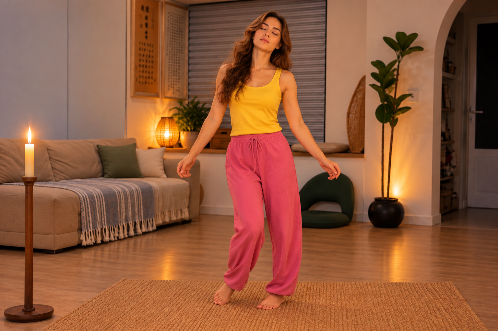

गौरीशंकर ध्यान
चार 15-मिनट के चरण: आरामदायक श्वास-रोक, कोमल दृष्टि, लतीहान जैसी स्वतःस्फूर्त गति और अंत में शांत लेटना।
पहली बार अभ्यास करते समय गतियों और चरणों को समझने के लिए वीडियो देखें। वास्तविक ध्यान के समय अभ्यास ऑडियो चलाएँ, फोन एक ओर रख दें और पूरी प्रक्रिया का अनुसरण करें। ऑफ़लाइन अभ्यास के लिए ऑडियो पहले डाउनलोड कर सकते हैं।
अभ्यास की शैली
क्रम से पढ़ें: पहले इस चरण का निर्देश समझें, फिर उससे संबंधित चित्र देखें। वास्तविक ध्यान के दौरान नीचे दिया अभ्यास ऑडियो चला सकते हैं।
चरण 1: 15 मिनट
गहरी श्वास लें, जितना सहज हो रोकें, धीरे बाहर छोड़ें और फेफड़ों को क्षणभर खाली रहने दें।

चरण 2: 15 मिनट
स्वाभाविक श्वास पर लौटें और मोमबत्ती या नीली रोशनी को कोमल दृष्टि से देखें।
चरण 3: 15 मिनट
आँखें बंद करके खड़े हों और शरीर को बिना नियंत्रित किए स्वाभाविक रूप से चलने दें।

चरण 4: 15 मिनट
आँखें बंद करके लेट जाएँ और बिल्कुल स्थिर रहें।

विधि केवल प्रवेश-द्वार है। चाहे उसमें श्वास, नृत्य, ध्वनि, अंधकार, बैठना या संबंध शामिल हो—मुख्य बात किसी अनुभव का पीछा करने के बजाय जो घट रहा है उसे धीरे-धीरे स्पष्ट देखना है।
आराम और सुरक्षा को पहले रखें। तेज़ चक्कर, दर्द, साँस लेने में कठिनाई या संतुलन बिगड़ने पर रुकें। तीव्र श्वसन, घूमना या श्वास-रोक वाले अभ्यास हर व्यक्ति के लिए उपयुक्त नहीं होते।
ध्यान शुरू करें · अभ्यास ऑडियो
वास्तविक ध्यान के लिए इस ऑडियो का उपयोग करें। इसे यहीं चला सकते हैं या ऑफ़लाइन अभ्यास के लिए फोन में डाउनलोड कर सकते हैं।
पहला सत्र · वीडियो मार्गदर्शन
वीडियो का मुख्य उपयोग गतियों, चरणों और मुद्रा को समझने के लिए करें। समझ आने के बाद ध्यान के समय अभ्यास ऑडियो चलाएँ ताकि स्क्रीन देखते रहने की जरूरत न पड़े।